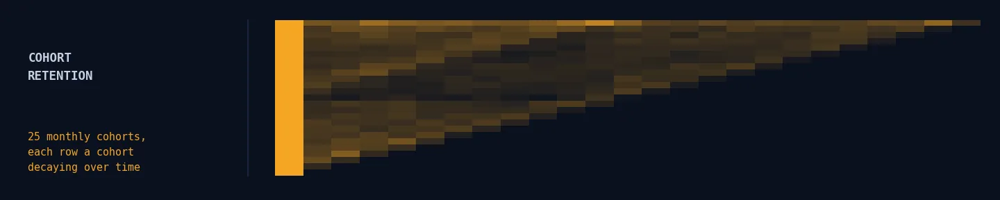
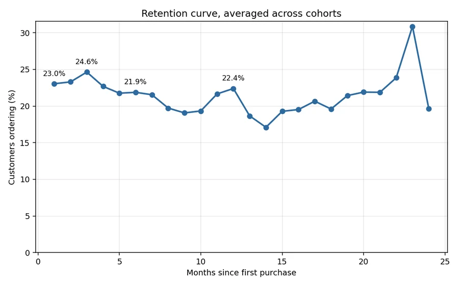
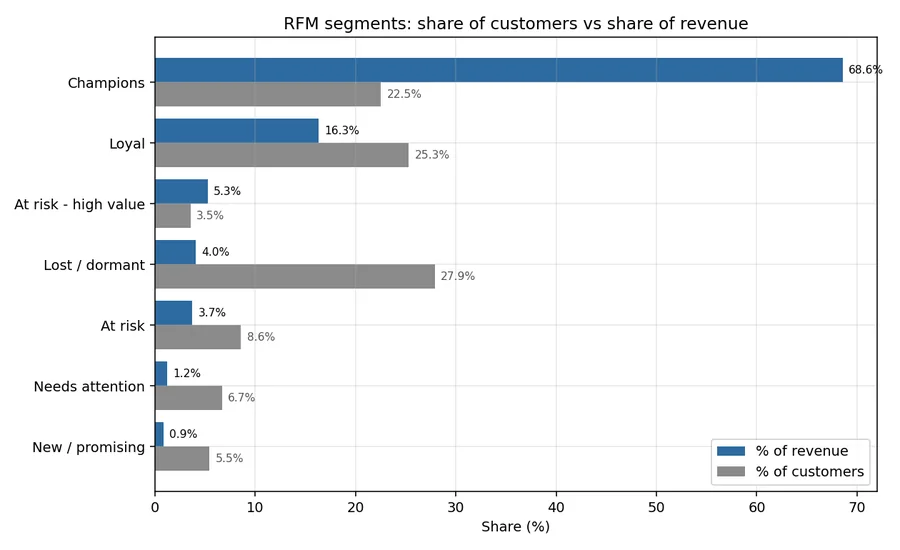

Wholesale retail · SQL · 1.07M transaction lines
Retail Analytics in SQL
A retention curve that refuses to decay said this was a wholesale business, not the consumer e-commerce everyone assumed.

The same logic expressed as a chain of pandas groupby calls is unreviewable. Window functions, CTEs and self-joins in a file someone can read and argue with are the point: the SQL is the deliverable, and the Python around it just runs the queries and draws the charts.
"Revenue" moves by £3.4M depending on what you count
| Basis | Revenue |
|---|---|
| All lines as delivered | £19.29M |
| Excluding cancellations | £20.81M |
| Excluding cancellations and non-product lines | £20.11M |
| Attributable to an identified customer | £17.43M |
A 17% spread between the largest and smallest defensible figure — and note it is not monotonic: removing cancellations raises revenue, because cancellation lines carry negative values.
This is why the audit runs first. Any analysis quoting "revenue" without stating its basis cannot be compared with another one, and the difference here is larger than most of the effects anyone would be trying to measure.
Nearly a quarter of transactions have no customer ID. They are real revenue, so they stay in the totals — but they cannot appear in a cohort or an RFM score. Silently including them would inflate the customer base; silently dropping them would understate revenue by £2.6M. The staging view flags them and each downstream query states its basis.
Retention does not decay, which says what kind of business this is
| Months since first purchase | 1 | 3 | 6 | 12 |
|---|---|---|---|---|
| Customers ordering | 23.0% | 24.6% | 21.9% | 22.4% |
A consumer e-commerce retention curve decays — steeply at first, then flattening. This one is flat from month 1 onward, and month 12 retention is indistinguishable from month 1.
That is not a healthy consumer business; it is a wholesale one. The customers who come back are trade buyers restocking on a cycle, and the median gap between orders is 25 days — roughly monthly reordering. The 72.4% repeat rate points the same way.
The practical consequence: "reactivate lapsed customers" campaigns aimed at the 77% who never return are probably aimed at one-off retail buyers who were never going to reorder. The budget belongs on the trade accounts instead.

Revenue is far more concentrated than 80/20
The Pareto rule would predict 80% of revenue from the top 20%. Here the top 10% alone account for 63.9%, and the top 20% for 77.2%. Losing a handful of accounts is a materially different risk to losing a broad slice of the base.
The RFM segmentation says the same thing from the other direction. The actionable row is "At risk — high value": 208 customers, 3.6% of the base, who have spent an average of £4,409 each and have stopped ordering. Together with the wider at-risk group they represent £1.57M of historical revenue.
That is a list short enough for a human to phone, which is worth more than any broad campaign to the 1,632 dormant customers who averaged 1.3 orders and £433 in total.

The fourth-biggest product sold nothing at all
A "top products" query ranking by revenue alone puts PAPER CRAFT, LITTLE BIRDIE fourth in the catalogue at £168,470. The product has exactly two lines in the entire dataset:
581483 · +80,995 units · 2011-12-09 09:15
C581484 · −80,995 units · 2011-12-09 09:27
One order of 80,995 units, cancelled by the same customer twelve minutes later. Net quantity: zero. Return rate 100%.
This is why the product query carries the return rate in the same row rather than in a separate report nobody joins back — and why the staging view keeps cancellations instead of discarding them.
Two markets, not forty-three
The UK is 87.1% of revenue. The Netherlands generates 3.3% from 22 customers at nearly 6× the UK average order value (£2,546 against £438); Australia 1.0% from 15 customers at £1,893.
Those are wholesale accounts, not a consumer market — and 22 named accounts is an account-management problem, not a marketing one.
Basket affinity is scored by lift rather than co-occurrence for the same reason: ranking pairs by raw co-occurrence just ranks the bestsellers against each other, since popular items appear in most baskets by definition. Lift asks whether a pair appears more often than independence predicts — and at ~176× the herb markers are effectively a set, which makes the recommendation concrete: sell them as a set rather than cross-selling one at a time.
What this does not support
- One retailer, two years, one currency. Nothing here generalises to another business; the transferable part is the method and the SQL.
- No cost data, so "revenue" is never "profit" and lifetime value is gross.
- Cohorts are defined by first purchase in this window, so customers who first bought before December 2009 are mislabelled as new — inflating the earliest cohort and depressing its apparent retention.
- The flat curve's tail rests on fewer cohorts: month 12 is averaged over 13 cohorts, month 1 over 24. The survivor filter prevents the worst of it; the tail is still less certain than the head.
- Guest checkouts are 22.8% of lines and invisible to every customer-level analysis. If those buyers behave differently — and one-off gift buyers plausibly do — the retention and segment figures describe the identified population only.
- Basket affinity is association, not causation. Herb markers co-occur because they are a set; nothing here shows that promoting one causes purchases of another.